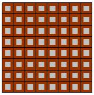
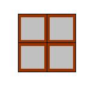

チャンクは、「パーティショナー」と「粒度」によって制御されます。チャンクを最大限に制御するには、次の 2 つの操作を行います。
parallel_for の第 3 引数として simple_partitioner() を指定します。これにより自動チャンクがオフになります。
範囲を構築するときに粒度を指定します。コンストラクターのスレッド引数の形式は、blocked_range<T>(begin,end,grainsize) です。grainsize のデフォルト値は 1 です。この値は、チャンクあたりのループ反復のユニット数です。
チャンクサイズが小さすぎると、オーバーヘッドがパフォーマンスのメリットを上回る場合があります。
次のコードは、parallel_for の前回のサンプルを、明示的な粒度 G を使用するように変更したものです。追加部分は太字で示しています。
#include "tbb/tbb.h"
void ParallelApplyFoo( float a[], size_t n ) {
parallel_for(blocked_range<size_t>(0,n,G), ApplyFoo(a),
simple_partitioner());
}粒度は、並列化の最小しきい値を設定します。サンプルの parallel_for は、(異なるサイズの) チャンクで ApplyFoo::operator() を呼び出します。「チャンクサイズ」をチャンクの反復回数にします。simple_partitioner を使用することで、⌈G/2⌉≤ チャンクサイズ ≤ G になることが保証されます。
auto_partitioner および affinity_partitioner を使用して範囲の粒度を指定する、中間レベルの制御もあります。auto_partitioner は、デフォルトのパーティショナーです。どちらのパーティショナーも、「自動チャンク」で説明されている自動粒度ヒューリスティックを実装します。affinity_partitioner は、「帯域幅とキャッシュ・アフィニティー」で説明されているように、追加のヒントを含みます。これらのパーティショナーではチャンクの反復回数が G より多くなることがありますが、反復回数が ⌈G/2⌉ 未満のチャンクは生成されません。これらのヒューリスティックが失敗する場合、明示的な粒度で範囲を指定して、これらのパーティショナーが必要以上に小さなチャンクを生成することを防ぐと良いでしょう。
粒度は並列ループに影響を与えるため、auto_partitioner や affinity_partitioner を使用して粒度を自動的に選択する場合でも、次の説明を読んでおくことを推奨します。
 |
 |
ケース A |
ケース B |
上記の図は、有用なワークを灰色、オーバーヘッドを茶色で表示することで、粒度の影響を示したものです。ケース A もケース B も、灰色の量は同じです。ケース A は、粒度が小さすぎたために、比較的大きな割合でオーバーヘッドが発生している様子を示しています。ケース B は、粒度を大きく指定したことにより、潜在的な並列処理の可能性を犠牲にして、オーバーヘッドの割合が小さくなった様子を示しています。有用なワークの一部であるオーバーヘッドは、粒の数ではなく、粒度に依存します。粒度を設定する際には、反復回数の合計やプロセッサー数ではなく、この関係を考慮してください。
通常、operator() の grainsize は、少なくとも 100,000 クロックサイクル実行するように設定すると良いでしょう。例えば、単一の反復で 100 クロック処理する場合、grainsize を少なくとも 1,000 にする必要があります。次の操作を行って確かめることができます。
grainsize 引数を必要な値よりも高く設定します。この値は、ループ反復のユニット数です。反復で処理するクロックサイクルが分からない場合は、grainsize=100,000 で始めてください。原理は、各反復で反復あたり少なくとも 1 クロック必要であるということです。ほとんどの場合、ステップ 3 でより小さな値を指定することになります。
アルゴリズムを実行します。
grainsize 引数を半分にしていき、値が少なくなるにつれて、アルゴリズムの速度がどの程度遅くなるか (または速くなるか) を確認します。
粒度の値を高く設定する短所は、並列処理を減少させてしまうことです。例えば、粒度が 10,000 でループに 20,000 回の反復がある場合、parallel_for は、プロセッサーが 2 つ以上ある場合でも、ループを 2 つのプロセッサーにしか分散しません。ただし、確信がない場合は、低すぎる値よりも少し高い値を設定してください。値が低すぎるとシリアル・パフォーマンスが損なわれ、コールツリー上位でほかの並列処理が利用可能な場合は、並列パフォーマンスにも影響します。
粒度は厳密に設定する必要はありません。
次の図は、100 万以上のインデックス値に対する浮動小数点計算 a[i]=b[i]*c に基づいて、実行時間と粒度の典型的な「バスタブ曲線」を示しています。反復ごとに、少量のワークがあります。時間は 8 個のハードウェア・スレッドを備えた 4 ソケットのコンピューターで測定されました。
目盛は対数です。左側の下降曲線は、粒度が 1 の場合、ほとんどの時間が並列スケジュールのオーバーヘッドであることを示しています。粒度が大きくなるにつれ、並列オーバーヘッドの割合が減少しています。その後、粒度の大きさが十分になり、パッケージング（オーバーヘッド）の影響が少なくなるため、曲線は平らになります。グラフの終点では、チャンクが大きすぎて利用可能なハードウェア・スレッドよりもチャンクの数が少なくなるため、曲線は上昇しています。100 から 100,000 の広い範囲の粒度でうまく動作していることに注目してください。
ループの入れ子を並列化するための一般的な経験則は、最も外側のループを可能な限り並列化することです。これは、外側のループの各反復が、内側のループの反復に比べ、より大きな粒度のワークを行う傾向があるためです。
最適化に関する注意事項 |
|---|
| インテル® コンパイラーでは、インテル® マイクロプロセッサーに限定されない最適化に関して、他社製マイクロプロセッサー用に同等の最適化を行えないことがあります。これには、インテル® ストリーミング SIMD 拡張命令 2、インテル® ストリーミング SIMD 拡張命令 3、インテル® ストリーミング SIMD 拡張命令 3 補足命令などの最適化が該当します。インテルは、他社製マイクロプロセッサーに関して、いかなる最適化の利用、機能、または効果も保証いたしません。本製品のマイクロプロセッサー依存の最適化は、インテル® マイクロプロセッサーでの使用を前提としています。インテル® マイクロアーキテクチャーに限定されない最適化のなかにも、インテル® マイクロプロセッサー用のものがあります。この注意事項で言及した命令セットの詳細については、該当する製品のユーザー・リファレンス・ガイドを参照してください。 注意事項の改訂 #20110804 |